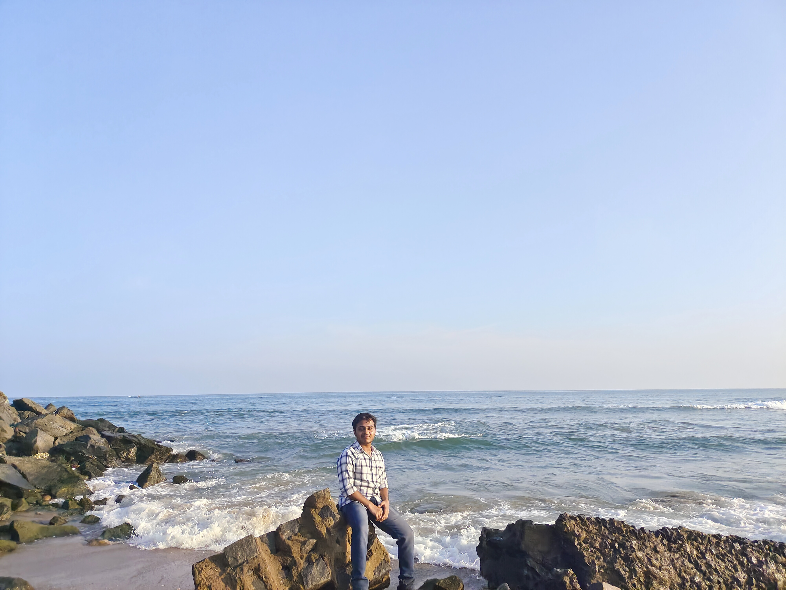

I am soham
I am a 22-year-old from India and I am currently studying Computer Science and Information security at
IIIT
HYDREBAD.
I have been programming since I was admitted to College and I absolutely love it. I also have experience
in
Competitive Programming. I am now interested in startups and it will very likely be my future career!
I was a 10-year-old who had a deep love for both computer and outdoor games. Growing up in a
household where
both my parents worked in the educational field, they exposed me to various math and science topics,
fueling
my curiosity and interest in subjects like mathematics and computer science.
Upon entering college, I embarked on a journey of exploration, delving into
theoretical subjects related to
computer science and emerging technologies. It was during my second year of bachelor's degree that I
was
introduced to competitive programming, and ever since, I have been relentlessly practicing coding
questions
and thoroughly enjoying the process of problem-solving. As a programmer, the word "accepted" brings
immense
joy and satisfaction to my mind.
Beyond my passion for programming, I possess an unwavering eagerness to push my limits and
accomplish new
feats. I am constantly driven to learn and enhance my skills, dedicating myself to self-improvement
each
day. For instance, if you have any constructive criticism or suggestions regarding a recently
created
website, I would greatly appreciate your input as I am always seeking opportunities for growth.